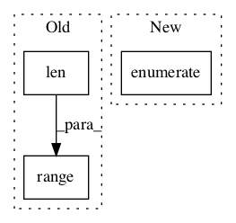

20f388cfe01635a2073723c5c4ffd6dd7a87fbb2,tensorflow_hub/tools/module_search/utils.py,,knn_errorrate_loo,#Any#Any#Any#,140

Before Change
indices = np.argmin(d, axis=1)
cnt = 0
for i in range(len(indices)):
if y[i] != y[indices[i]]:
cnt += 1
After Change
indices = np.argmin(d, axis=1)
cnt = 0
for idx, val in enumerate(indices):
if y[idx] != y[val]:
cnt += 1
In pattern: SUPERPATTERN
Frequency: 3
Non-data size: 3
Instances
Project Name: tensorflow/hub
Commit Name: 20f388cfe01635a2073723c5c4ffd6dd7a87fbb2
Time:
Author: null
File Name: tensorflow_hub/tools/module_search/utils.py
Class Name:
Method Name: knn_errorrate_loo
Project Name: tensorflow/hub
Commit Name: 20f388cfe01635a2073723c5c4ffd6dd7a87fbb2
Time:
Author: null
File Name: tensorflow_hub/tools/module_search/utils.py
Class Name:
Method Name: knn_errorrate
Project Name: IBM/adversarial-robustness-toolbox
Commit Name: cc42963f51b39e75e245057bbf3851afbd589a35
Time:
Author: null
File Name: art/estimators/object_detection/pytorch_faster_rcnn.py
Class Name: PyTorchFasterRCNN
Method Name: predict